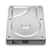
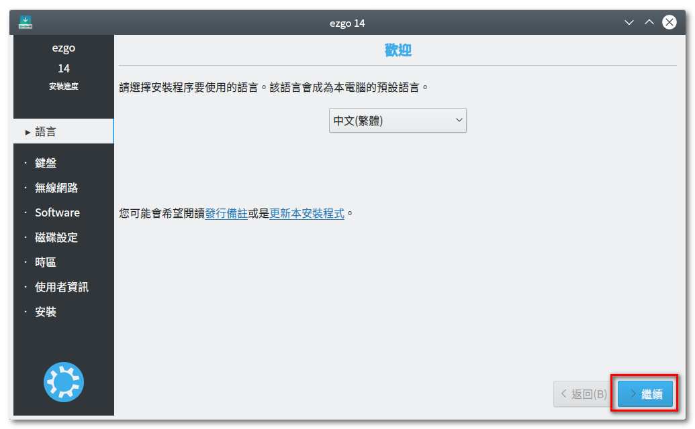
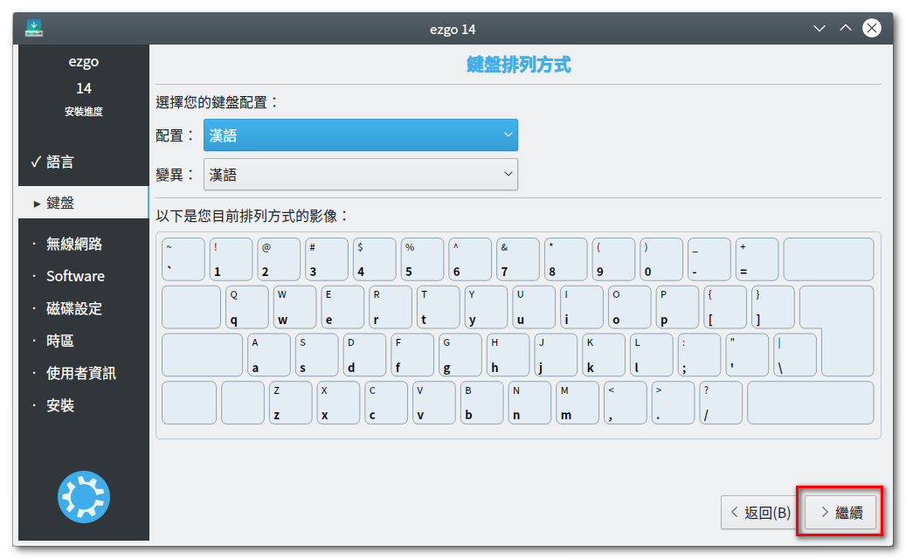
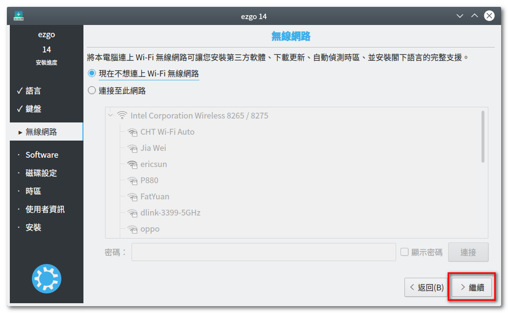
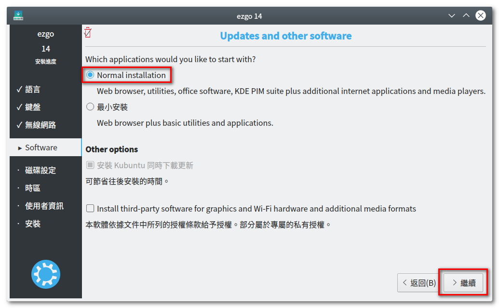
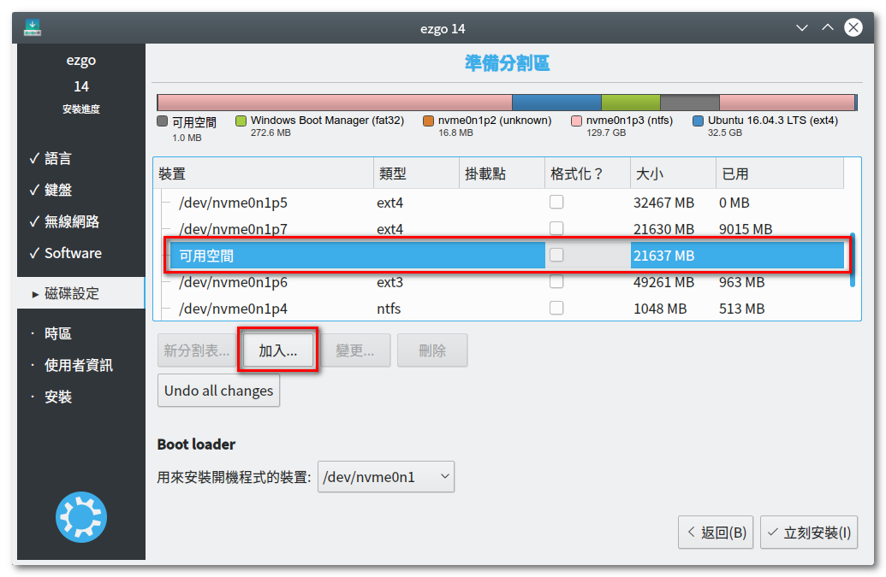
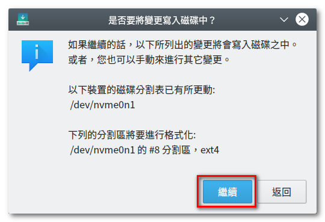
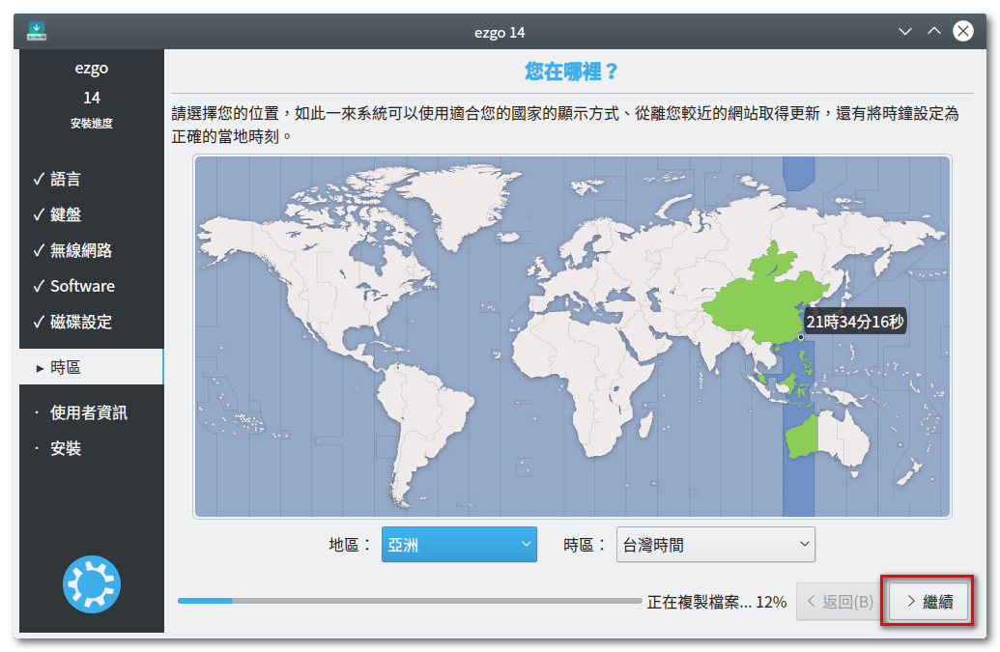
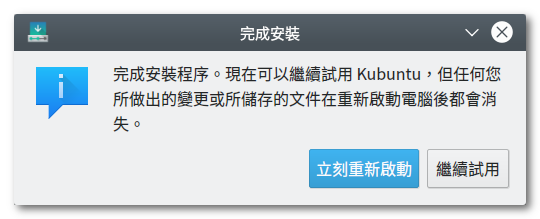

3.安裝 ezgo
當您將 ezgo 系統直接安裝到您的電腦中，您的電腦就會變成雙系統，於每次
開機時會出現多個開機選項，預設第一個是 ezgo，若要進入 Windows 系統
要手動選擇，
再按『Enter 鍵』。
※若要修改開機選單的順序或預設值，請參見『安裝 ezgo 之後，如何修改開機選單順序？』
● 安裝 ezgo 的優缺點：
◎ 優點：
○ 執行速度最快、體驗品質最佳
○ 可安裝新的軟體或套件
○ 可讀取相關硬體及週邊設備
○ 可儲存檔案及系統相關設定
◎ 缺點：
○ 需分割硬碟，並安裝系統
○ 開機時，開機選項變多
○ 檔案必須儲存於共有空間，否則無法跨平台讀取
● 安裝 ezgo 步驟說明
| 步驟 1：點選桌面上『Install ezgo13』的 圖示二下，進入安裝程序。 |
步驟 2：安裝語系選擇『中文(繁體)』，再按 『繼續』進入下一步驟。 |
|  | |
| 步驟 3：選擇『現在不想連上 WiFi 無線網路』 ，再按『繼續』即可。 |
步驟 4：這是準備的提醒事項，檢查電腦相 關事宜是否符合，再按『繼續』即可。 |
|  |  |
| 步驟 5：磁碟設定的步驟，選擇『◎手動』 再按『繼續』進入下一步驟。 |
步驟 6：選擇之前分割出來的磁區，預設裝置 名稱為『可用空間』。 選擇完畢後點選『加入』按鈕。 |
|  | |
| 步驟 7：設定磁碟區的型態為『Ext4日誌檔 案系統』，並掛載於根目錄『/』， 再按『OK』。 |
步驟 8：完成設定之後，選按『立刻安裝』。 |
|  | |
| 步驟 9：再次檢查欲安裝的磁碟資訊， 點選 『繼續』按鈕。 |
步驟10：時區預設會選到台灣的時區， 點選 『繼續』按鈕。 |
|  | |
| 步驟 11：鍵盤配置預設也會選到當的配置， 點選『繼續』按鈕。 |
步驟12：依序設定『使用者名稱』、『密碼』， 密碼千萬別忘記，這是日後要更改設 定常會用到，若您不知要設定什麼，建 議可用『moe』並設定『◎自動登入』 完成後點選『繼續』。 |
|  | |
| 步驟13：系統開始安裝。 | 步驟14：安裝完成後，選按『立即重新啟動』 即可體驗 ezgo。 |
 |
 |

{kind=link}
{kind=link}
{kind=link}
{kind=link}
{kind=link}
{kind=link}
{kind=link}
{kind=link}
{kind=link}
{kind=link}
{kind=link}
{kind=link}